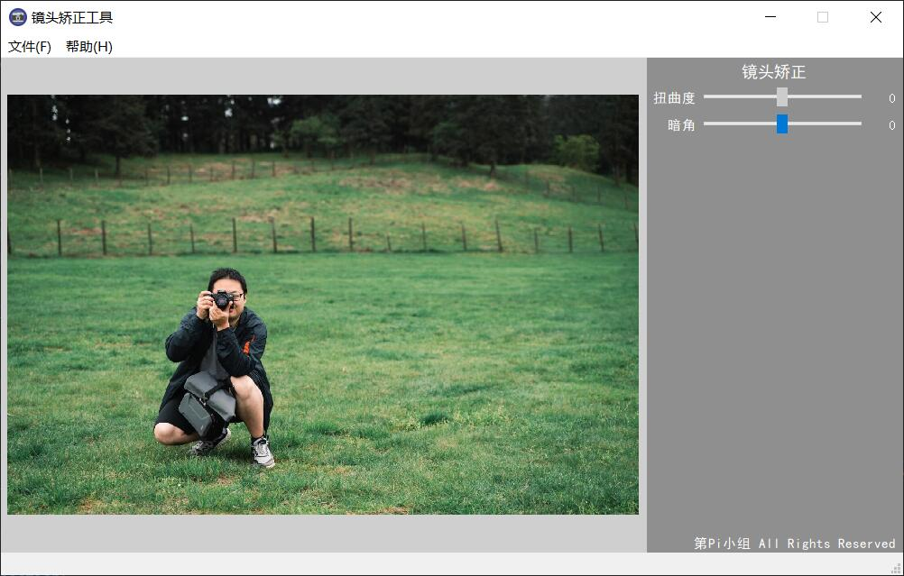

制作： 第π小组
本示例将会开发一个镜头矫正工具，用户可以通过程序修复拍摄图片的暗角问题
实质是图片这一多维数据的通道数值处理
采用 Qt5 作为图形界面
# 暗角处理
def vignettingImg(cvimgOriginal, weight):
cvimg = np.copy(cvimgOriginal)
rows, cols, chunnel = cvimg.shape
# 中心点
center = ImgUtils.centerPoint(cvimg)
# 最大半径 即圈住图像的最小圆半径
maxRadian = ImgUtils.dist([0, 0], center)
# 最小半径 即约定范围
minRadian = maxRadian * (1 - abs(weight))
# 权重正值标记 权重为正减淡 为负加深
if weight >= 0:
for r in range(rows):
for c in range(cols):
# 当前距中心点距离
tempDist = ImgUtils.dist([r, c], center)
# 验证约定范围
if tempDist > minRadian:
# 标准化 后得到点的权重值 (1 - 2)
tempWeight = 1 + (tempDist - minRadian) / (
maxRadian - minRadian) * abs(weight)
# 遍历防止越过 255 最大值
for i in [0, 1, 2]:
temp = cvimg[r, c, i] * tempWeight
if temp > 255:
cvimg[r, c, i] = 255
else:
cvimg[r, c, i] = temp
else:
for r in range(rows):
for c in range(cols):
tempDist = ImgUtils.dist([r, c], center)
if tempDist > minRadian:
# 标准化 后得到点的反向权重值 (0 - 1)
tempWeight = 1 - (tempDist - minRadian) / (
maxRadian - minRadian) * abs(weight)
cvimg[r, c] = cvimg[r, c] * [
tempWeight, tempWeight, tempWeight
]
return cvimg
通过遍历每个像素点，计算像素位置应该叠加的明暗值
暗角处理功能流程
软件开发流程部分的贯通...
... Python语言开发基础 ...
... 综合能力 ...
优化处理算法, QT图形界面异步, 镜头畸变矫正